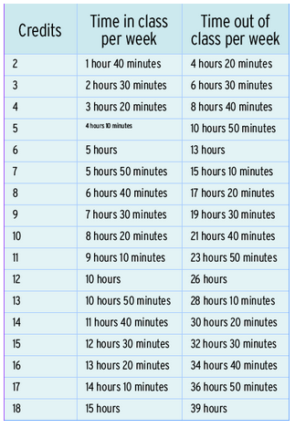

# Section Zero
Introduction
mgilland@astate.edu
---
## Steve Gilland
* Graduate of Arkansas State University
* Master of Science in Computer Science
* Data Science
* High Performance Computing
* Several Side Businesses including
* The Foundry - Game/Hobby Shop
* Forge's Foundry - 3D Printing
* Needle & Bliss - Embroidery & Screenprinting
## Class Expectations
* 4 classes per week - 5 hours in-class
* 13 hours outside of class
* Labwork
* Assignments/Quizzes
* Studying
* Homework

## Class Expectations
| Name | Frequency | Late Policy |
| --- | --- | --- |
| Quizzes/Assignments | 1 per Week | lowest 10% dropped |
| Lab Work | Twice per Week | None Accepted |
| Programming HW | Once per Week | 5 days Total |
| Tests | 4 this Semester | None Accepted |
---
## Quizzes/Assignments
* A quiz or assignment will accompany the programming homework every week.
* This assignment will pertain to the lessons learned that week and will function to reinforce the information given for the week.
* The lowest 10% of scores will be dropped in order to increase your grade and will function to cover inability to turn items in.
* Corrected answers will be provided before the corresponding test.
---
## Lab Work
* Small lab assignments will be assigned twice each week to accompany the learning and reinforce the programming concepts for that week.
* These assignments will be graded pass/fail only. If the program accomplishes what is necessary it will be graded a passing grade.
* No late assignments will be accepted, and the corrected source will be provided after closing the assignment.
---
## Programming Homework
* These assignments will be involved and will take a considerable amount of time and will build upon current and previous weeks knowledge.t answer.
* Please do not take these lightly, they will test your problem solving, programming, and planning skills.
* You will be allowed a total of 5 days of lateness.
* Being late by a single minute will use a day of that pool. After your pool is exhausted you will be allowed to turn in late assignments.
* Late assignments will be graded at full marks earned.
---
## Homework Grading Rubric
* Code/Algorithm Correctness -- **50%**
* Technical correctness of the computations performed by your code and the output produced by your program as well.
* Style, Coding Constructs, and Layout -- **25%**
* Adherence of your code to the style guidelines for the course .
* Documentation and Self-Documenting Code -- **25%**
* Adherence to the documentation guidelines for the course, as well as the degree to which your code is "self-documenting".
---
## Attendance Policy
* Attendance will be taken each day. If you must miss a class, it is your responsibility to cover the material that was covered in class on that day.
* If you must miss an exam, quiz, or other in-class assignment, you should alert the instructor before the class meeting; failure to do so may result in your being unable to make up the work.
* Any arrangements for make-up exams, quizzes, or other in-class assignments will be expected to result in completion of the work within three business days of the absence.
---
## Grading
| Category | Percentage | | | | Final Grade | Grade Assigned |
| --- | --- | --- | --- | --- | --- | --- |
| Class Participation | 5% | | | | 90-100 | A |
| Quizzes/Assignments | 15% | | | | 70-89 | B |
| Homework | 20% | | | | 50-69 | C |
| Lab Work | 10% | | | | 0-49 | F |
| Exams | 30% | | | | | |
| Final Exam | 20% | | | | | |